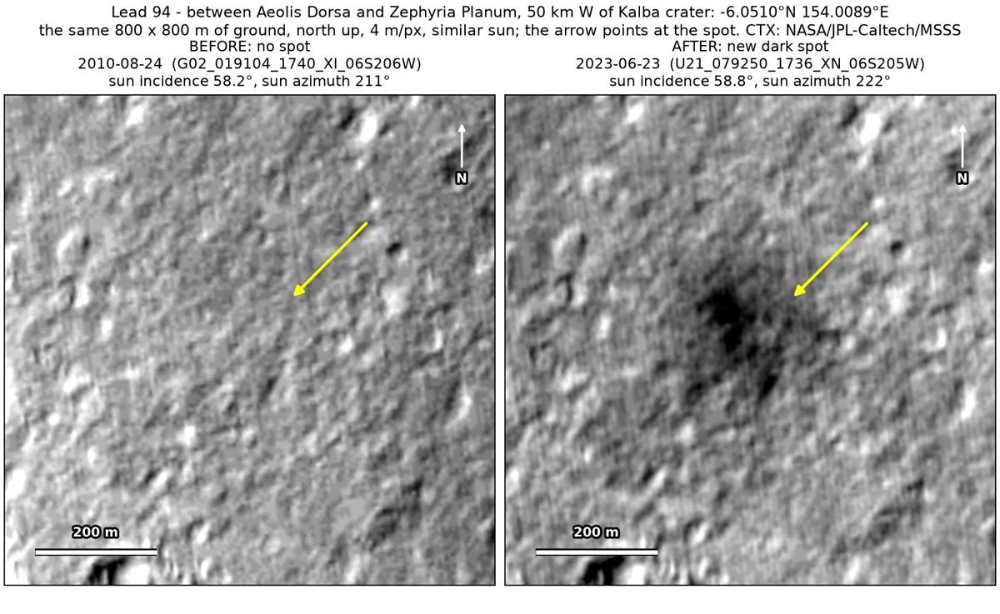
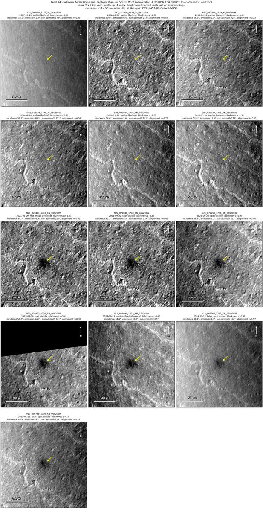
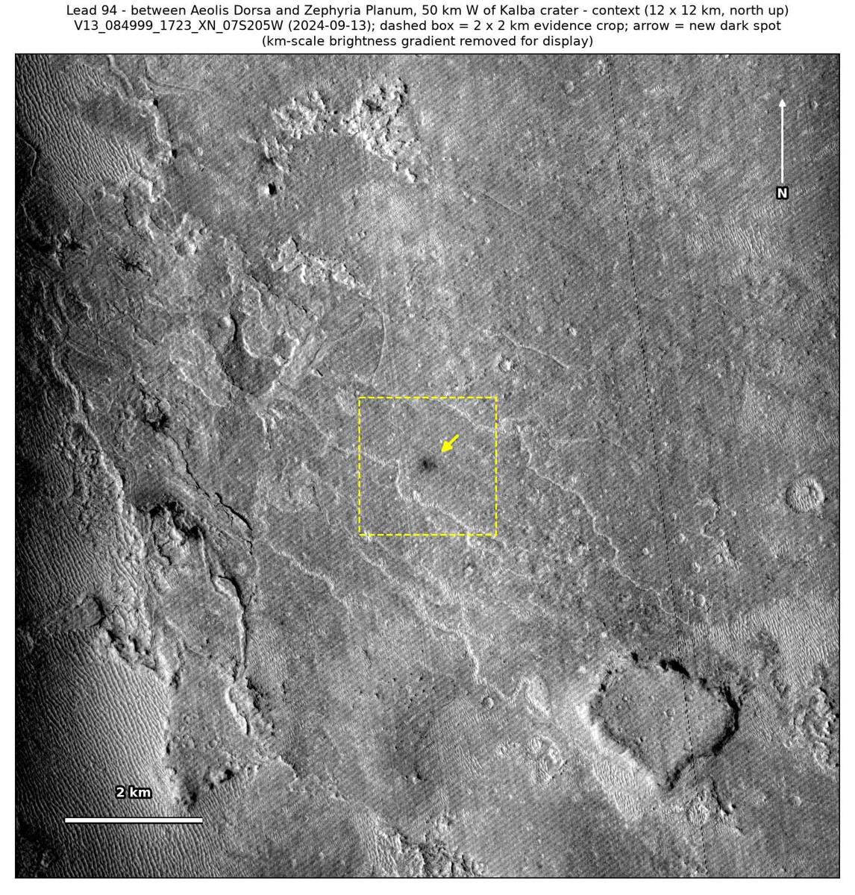
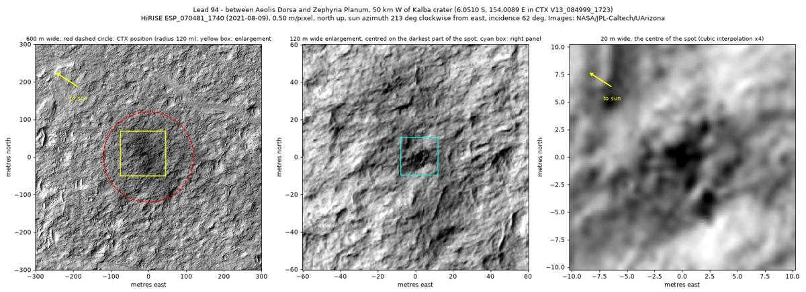

Professor of Mathematics
Paata Ivanisvili
Department of Mathematics, University of California, Irvine

← Possible new impact sites on Mars
Candidate 94: Plains between Aeolis Dorsa and Zephyria Planum, 50 km west of Kalba crater
Strong · roughly 70%

What changed. A dark patch about 100 m across, a darker core in a fainter halo about 200 m across, appeared on rough, wind-eroded plains 50 km west of Kalba crater between December 2010 and August 2021; it shows in seven CTX images from seven orbits, fading in the last two, of November 2024 and January 2025.
Why it may be a new impact. Six earlier images from 2007 to 2010 show no patch there, one of them, of August 2010, under the same sun as the June 2023 image, and the aligned before-and-after difference is deepest at the patch and nowhere else in the 2 × 2 km area around it; a round dark zone with a darker centre and no streaks, seen on seven orbits from 2021 to 2025, is how the blast zone of a small new crater looks.
- Location
- 6.051° S, 154.009° E
- Absent
- 19 October 2007, 28 March 2008, 24 April 2010, 24 August 2010, 18 December 2010 and 29 December 2010
- Present
- 9 August 2021 (CTX and HiRISE), 22 September 2021 (CTX and HiRISE), 23 June 2023, 6 August 2023, 13 September 2024, 12 November 2024 and 29 January 2025
- Size
- Dark patch about 100 m across (58 × 112 m in the September 2024 image), a darker core in a halo about 200 m across; in the HiRISE images, a dark zone 89 × 107 m with no definite crater
- Confidence
- Strong candidate; roughly 70% that it is a new impact.
- Caveat
- By chance, NASA’s HiRISE camera photographed the patch on 9 August 2021 and again on 22 September 2021, on the same orbits as two CTX images, while aimed at sinuous channels near Zephyria Planum. Both show the same dark zone, 89 × 107 m and darker towards the centre, but no definite crater, only a dark blob about 4 m across at its centre. HiRISE shows no definite crater and the patch faded after September 2024, so a wind-driven change in the dust, without a crater, cannot be ruled out; with no earlier HiRISE image and no CTX image between December 2010 and August 2021, its date of formation is poorly known. It lies in the area of a catalogue of new impacts near the InSight lander (Bickel et al. 2025) whose period overlaps its window, so it may already be listed there; that could not be checked. Like every candidate here, it is unconfirmed: see the caveat.


